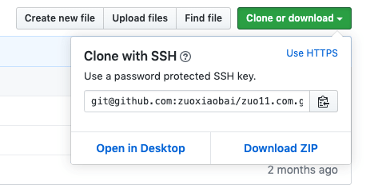

2019/12/04
Author: guoqzuo
git clone大文件仓库超时问题
当远程仓库比较大，或者弱网的情况，可能会出现git clone超时的问题，一直clone不下来，一般可以用两种方法来解决：一是git clone时使用 depth参数；二是使用ssh拉取方式
使用depth参数
git clone --depth=1 git://someserver/somerepo
# depth用于指定克隆深度，为1即表示只克隆最近一次commit.
# 参考:
# https://segmentfault.com/q/1010000007700727使用ssh方式clone
